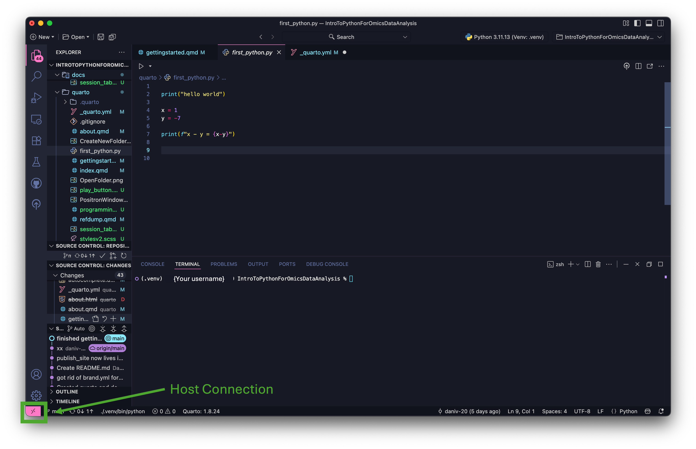
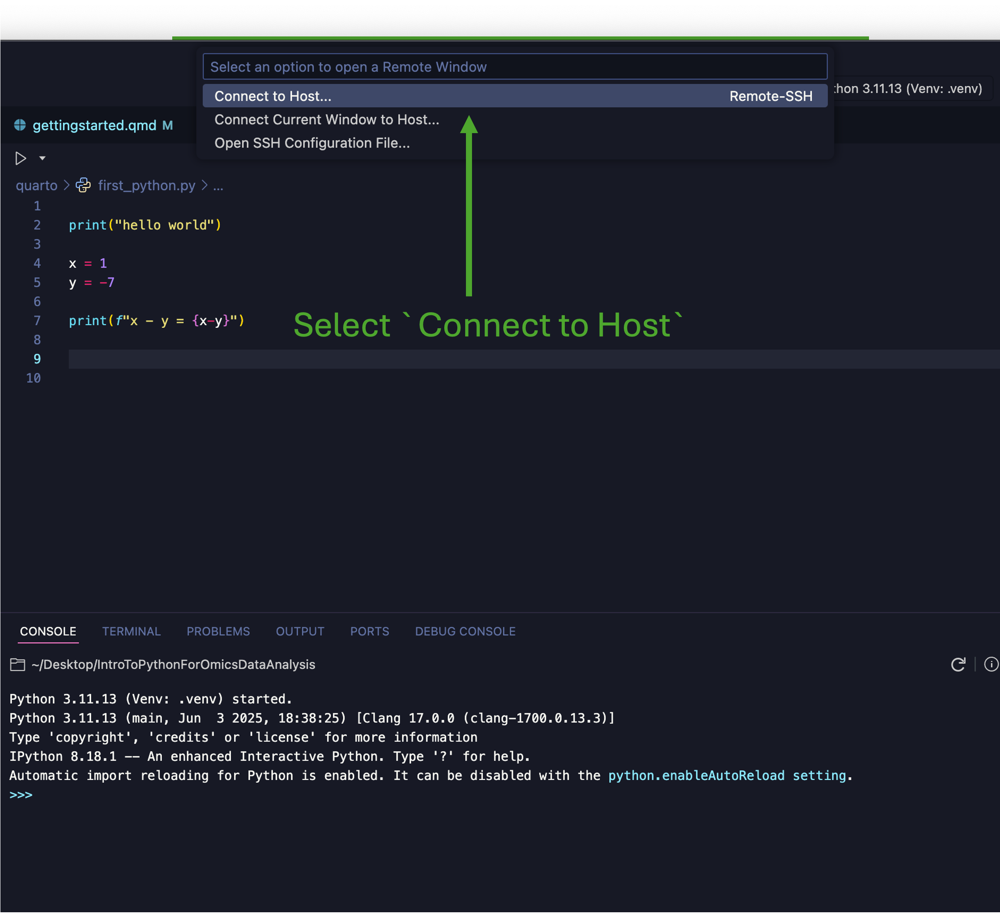

print("hello world")
x = 1
y = -7
print(f"x - y = {x-y}")hello world
x - y = 8This tutorial explains some ways to get started with using Python, including installation, setup, IDEs, and virtual environments (venv/conda, I prefer venv, many use conda).
This is a bare-bones tutorial, but there are others out there that explain these things in more depth. This tutorial assumes you have the ability to download and install files on your machine, which may not be true for some organization managed devices/compute clusters!
Python can be installed from https://www.python.org/downloads/. Please choose the download that best matches your device OS (MacOS, Windows, Unix, etc).
The downloads website will default to the most recent version of Python, but you can scroll down to find other versions. Please note that you may run into package dependency issues when using some older tools or open-source tools that have not been updated for the most recent python version.
As of writing this, my preference is to use Python 3.10 or Python 3.11. It is possible to have multiple python installations on the same machine and either venv or conda to manage which version of python you want to use for a given project.
I have made this mistake too many times. If your python executable is not in your system path, you can run into problems using python. This tutorial explains how to add your Python to the system path for various OS https://realpython.com/add-python-to-path/.
Python can also be installed using conda if you choose. I would recommend miniconda https://www.anaconda.com/docs/getting-started/miniconda/main if you decide to go the conda route as the full anaconda installation is rather large and clunky. The miniconda tutorial from the link above is pretty comprehensive so I will not rehash it here.
Choosing an IDE is a personal preference. There are many free and paid IDEs out there, each with their own pros and cons.
Because I use both R and Python in my work, I prefer to use Positron https://positron.posit.co/download.html, a relatively new IDE from Posit that combines aspects of VSCode https://code.visualstudio.com (including most VSCode extensions) and RStudio. Positron is free to download and works well on both Windows and MacOS machines in my experience. If you do not already have another IDE you prefer, I would recommend giving Positron a try! I will include positron screenshots where relevant in these tutorials.
Most of the tutorials here should be valid regardless of your choice of IDE, however I may reference certain extensions or tools that are more specific to Positron/VSCode since those are what I am familiar with.
Now is a good time to open your IDE if you haven’t yet!
Many IDEs (including Positron, VSCode and RStudio) are very customizable, so I encourage you to take some time to explore your IDE of choice and set it up in a way that feels comfortable to use. Some IDEs also let you transfer customizations between machines via setting up an account or profile.
Some things to customize include:
- Theme (ex: dark mode/light mode)
- Extensions (ex: csv viewer, pdf viewer, Quarto, Github)
- Editor Layout (ex: console, terminal, plot viewer, variables)
As you spend more time using your IDE you can change your customizations to better suit your needs.
For those using Positron/VS Code I would recommend the following extensions:
- Jupyter
- Github Pull Requests
- Quarto
Jupyter notebooks and quarto documents both allow you to combine code chunks with normal text. (I also built this website with Quarto!!) Having a csv viewer in your IDE is helpful, but not a requirement.
It is also possible to configure your IDE to play well with git/github and allow remote-ssh to a compute cluster (see Step 4: SSH to Host).
Depending on your IDE, you may have to install an extension to work with Python (I believe this is true of VSCode). Other than that, if you added Python to the system path correctly, you sould be ready to go!
If you are working with Positron, you should see your Python version (or the word ‘Session’) at the top left of the window. If you click that box, you can change what version you’re using.
Focusing on Positron/VSCode (the user interface looks almost identical for both of them), you would typically start a project by opening or creating a project folder.
For now, create a folder called ‘BeginningPython’ and open it in your IDE.
To create a new folder, click the ‘New Folder’ icon shown below.
To open a folder in Positron, you click the ‘Open Folder’ icon shown below.

Python scripts use the extension .py. To create a Python script in your IDE, click on the New File icon and, in the new file’s name bar, type first_python.py.
To open this new file, click on it.
Aside: Because the .py extension is what tells the computer that a file is supposed to be a python script, it is technically possible to create python scripts in a simple text editor by naming the file with the .py extension.
To get started, let’s write a simple print statement and do some basic math.
In your python script, write the following.
print("hello world")
x = 1
y = -7
1print(f"x - y = {x-y}")There are multiple ways to run your python script. If you are working in Positron, you can highlight the lines of code you want to run and press ctrl + return (true for Windows and MacOS).
The method above is best for running a few lines at a time. To run the full file, click the ‘run’ button on your IDE. In Positron, it’s typically located at the top left (right below the python script tab).

After running the demo code, you get:
print("hello world")
x = 1
y = -7
print(f"x - y = {x-y}")hello world
x - y = 8You can also run python scripts from the command line. If you are using Positron, click on the “TERMINAL” tab. In the terminal, you should see the name of your working directory (the folder your ‘first_python.py’ document is in.)
The ‘scripting language’ of the terminal is called ‘bash’ for Unix-like systems (MacOS, Linux) and typically ‘powershell’ for windows.
python first_python.pyIf you are working on MAC, you might have to do python3 first_python.py instead.
Finally, you can run one or multiple python files using a bash script (.sh file). This is a bit more involved so it will be included in another tutorial link will be here when available.
If you followed the tutorial up to this point, you can now run a python script on your computer! The next tutorial will cover installing packages, virtual environments and a brief intro of how to Do Things in Python (aka python data structures and object-oriented vs functional programming).
If you work with an internal server/compute cluster that you access via SSH (if this does not apply to you feel free to skip this part), you can connect to it via Remote-SSH in Positron. Please note that this will only work if you have the correct permissions for the remote host!
There are two ways to connect Positron to a remote host. The fast way is to click the little >< icon at the bottom left of the screen . Mine is pink, yours may be another color depending on your theme. This will take you directly to the options to Connect to Host, Connect Current Window to Host or Update SSH Configuration . Click Connect Current Window to Host and put the username you use to connect to your compute cluster and then hit enter and type your password.
The first time you connect to the host, it will take some time as positron needs to be installed on the host. After that, the connection will be much faster.
The other option to connect via Remote-SSH is to click on the search bar add img and click show and run commands. add img or press ctrl+shift+P (cmd+shift+P on mac). This opens the commands panel in which you can type SSH and click on Remote-SSH: Connect Current Window to Host add img. There you put the username you use to connect to your compute cluster and then hit enter and type your password.
Once you have connected to the remote host, you should be able to create and run python scripts there in the same manner as on your local machine (provided you have the necessary permissions).
If you want to run a file from your local machine on the host machine, you need to upload that file (and the necessary data etc.) to the host machine.
You can download files/folders from the host machine to your machine by right-clicking (ctrl+click on mac) and then clicking download.